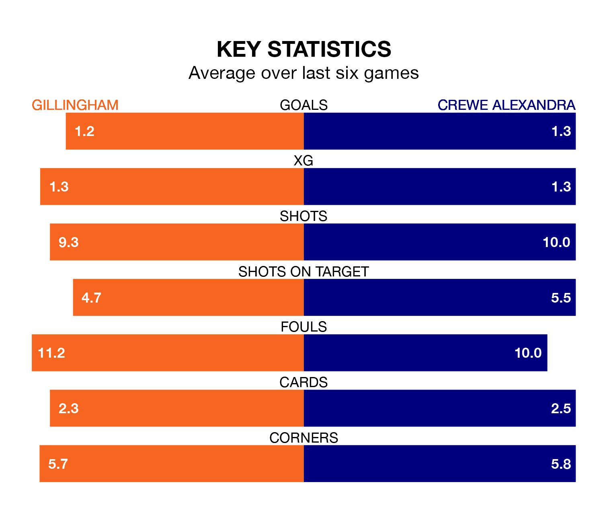

Gillingham host Crewe Alexandra on Friday at the MEMS Priestfield Stadium in EFL League Two.
In their last league match, on Saturday, Gillingham beat Morecambe 3-2 away, with goals from Connor Mahoney, Oliver Hawkins and Timothee Dieng.
Crewe drew, 1-1 at home against AFC Wimbledon, with Rio Adebisi scoring their goals.
With 39 goals in 40 games so far this season, Gillingham are the league's second-lowest scorers with 1.0 goals per game. But they are conceding fewer than average too, letting in 47 goals at a rate of 1.2 per game.
Crewe, meanwhile, are above average scorers, with 1.7 goals per game, compared to a league average of 1.5. They have conceded 1.4 goals per game.
In the last 10 years, Gillingham and Crewe have played each other on 11 occasions. Gillingham won seven of them, Crewe three, and they drew once.
On average, the Gills scored 1.5 goals and the Railwaymen 0.9 in those matches.
Their last meeting was on October 3, when Crewe won 2-0 at home.
The Railwaymen are fifth in the table after 39 games, of which they have won 18 and drawn 11, earning 65 points.
The Gills are three places behind the away team in eighth, with 17 wins and eight draws putting them on 59 points.
In Jake Turner, the hosts can rely on one of the league's safest pair of hands. He has kept 11 clean sheets in his 33 appearances this season in EFL League Two.
In Crewe's net, Harvey Davies has seven clean sheets in 27 games. He has conceded a goal every 68 minutes, 10% more often than the 78 minutes between goals for Turner.
Gillingham are in mixed form in EFL League Two, with two wins and two draws from their last six games.
With two wins and a draw over that period, Crewe's form is slightly worse – they have taken seven points from 18, compared to Gillingham's eight.
Updated: 12:39 (UTC), 26/03/24